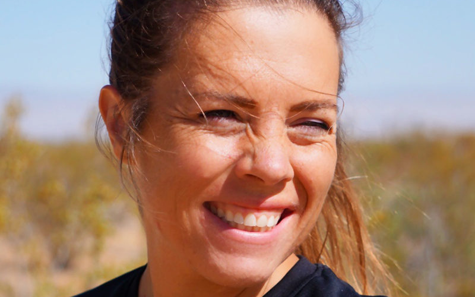
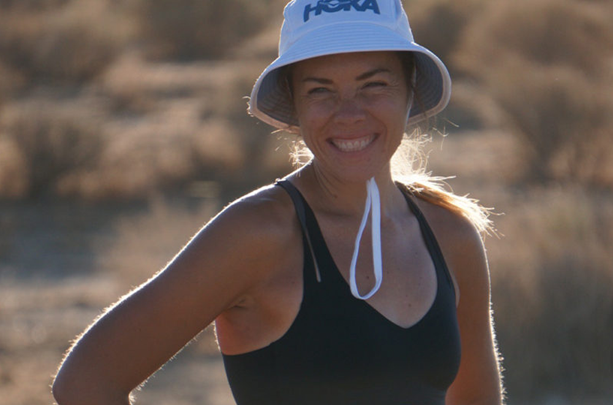
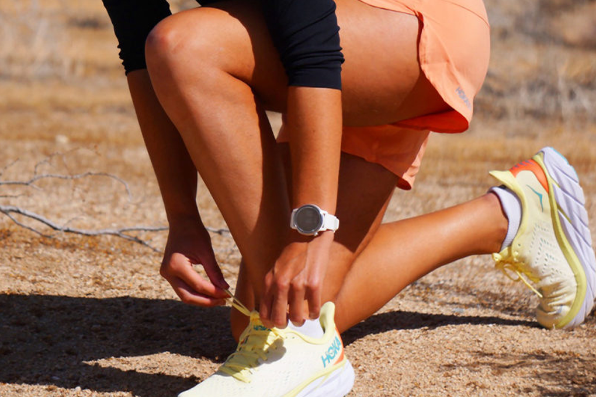

How Running Brings Me Joy with @fueledbylolz
With the moniker @fueledbylolz, runner, blogger, and HOKA fan Hollie understands the unbridled joy that running and movement can bring us. So, we sat down with Hollie to learn more about her history with the sport, how running brings her joy, and how you too can foster happiness from movement in your life.
-

I haven't always been a runner. In fact, throughout my entire childhood and early adulthood, I can't think of a single time running brought me joy. I barely passed the mile run test in gym class. In college, I avoided running because I wasn't required to run but it wasn't as if I wasn't athletic. My sport and my passion was swimming. I swam competitively throughout high school and college.
When I was a college junior, I began getting burned out with swimming and not loving it. I had grown up swimming competitively, and it was a sport I had come to love. I enjoyed the practices, the groups of friends it brought me, the swim meets, and the act of actually swimming laps…until I didn't. Suddenly, it began feeling like a chore. Like something I “had to do” because I had done it for so long. It was no longer something I WANTED to do. To be honest, I didn't even know if I could ever fill that void.
Most competitive runners competed in running through high school and college. I loathed every time we had to run in gym class. It was unfortunate because my family was a “running family”. My mom had run track in high school, my dad ran marathons, and both my siblings ran track. We once went on a family outing to the track and I sat in the bleachers. I couldn't find a single aspect of running that I enjoyed. The majority of my fellow swimming friends will tell you that “running is a punishment,” and they say they would rather swim a mile than run one.
In my junior year at college, when I no longer enjoyed swimming and the sport I had spent a decade doing, I knew I needed to find something else that I did enjoy. I didn't necessarily think it needed to be a sport, but something I could do that I enjoyed just as much as swimming. I went to the gym a few times a week and tried everything the gym had to offer, except the treadmills.
-

In March of that year, my college put on a small 5K, for which the course was the perimeter of the campus. Participants received a free long sleeve t-shirt for completing it. Going to school in upstate New York, you can never have enough long sleeve t-shirts, so I was motivated to finish the 5K. I don't know why I decided to even run, because at that point I didn't even like running. I remember “not hating it” after I finished it. This was a pleasant surprise and a stark difference from hating running every other time I had done it earlier.
Throughout the spring and the following summer, I ran periodically but not enough to consider myself a runner. In fact, when my Dad asked if I wanted to do a 10K with him that summer, I said “I was busy.” But really what I thought was that it was too far for me. I ran when the weather was ideal conditions. It had to be perfect outside and then I would run the same perimeter loop as our campus 5k.
It was at that time, in the Spring of 2010, running began to bring me joy. To be honest, at the time, I liked that running was precisely the opposite of what swimming had become. Swimming competitively is a rigid sport, involving training for big meets and everyone extremely focused and serious.
In the Spring of 2010, running was easy and carefree, and I could do whatever I wanted when I wanted. No one was counting on me to run. And one of the beauties of running is that it is always there for you, whenever you want to run. You can take years off and still come back.
I began running more and more throughout that summer of 2010. My college was a small Division III school, and I had begun to enjoy running so much that I emailed the college cross country coach and asked if I could join the team. He said “Yes” and sent me a training plan for the summer. The thought of running seven miles on one run, which was part of that plan, overwhelmed me! What were strides? I had no idea about any of the sport's technical terms. I found myself asking a lot of questions and realizing: you can compete with running like swimming. That excited me!
-

I didn't realize at the time that my newfound path into running would become significant enough to change the direction of my life. If I had never emailed the college cross country coach and gotten out of my comfort zone, I wouldn't be where I am today. Running brings me joy every time I am able to get out for a run. Whether it's fast or slow, a race, or trail run, I am happy to be out there.
In 2011, I actually met my (now) husband during one of college cross country scrimmages against a neighboring school. My cross country team experience was the complete opposite of my swim team. Our swim team competed to win. Our cross country team hoped we could all finish with a complete team at each meet. At the time, that experience of “just finishing” was good for me because I think that if I had gone from one intense team sport to another, running wouldn't have brought me the joy that it does now.
After graduation, I moved about two hours south to Oswego, New York, for my first “real job.” I didn't know anyone, didn't know the area, but I had running. I continued running and finding local races where I could meet other people. It was my first time consistently running road races and I met people of all ages who found joy in running.
For most people, the time right after college is full of turbulence and “finding yourself.” I didn't have a lot of consistency in my new life then, but I did have running. I was able to lace up my running shoes and get out each morning. Some days, it felt like the only routine I had, and I clung to it.
After my first full year of work in Oswego, my boyfriend, who was in the Air Force, and I decided to live together. Unfortunately, it meant I had to move again since he didn't really have a choice about where he lived. I moved to be with him in a small town in Texas. I didn't know anyone there but him, and I decided to begin training for my first marathon, the 2013 New York City marathon. I have never felt more isolated than when we lived in that small Texas town, thousands of miles away from friends and family. But once again, I could run, and this time I focused on my goal of completing my first marathon. That training cycle got me through that isolated time.